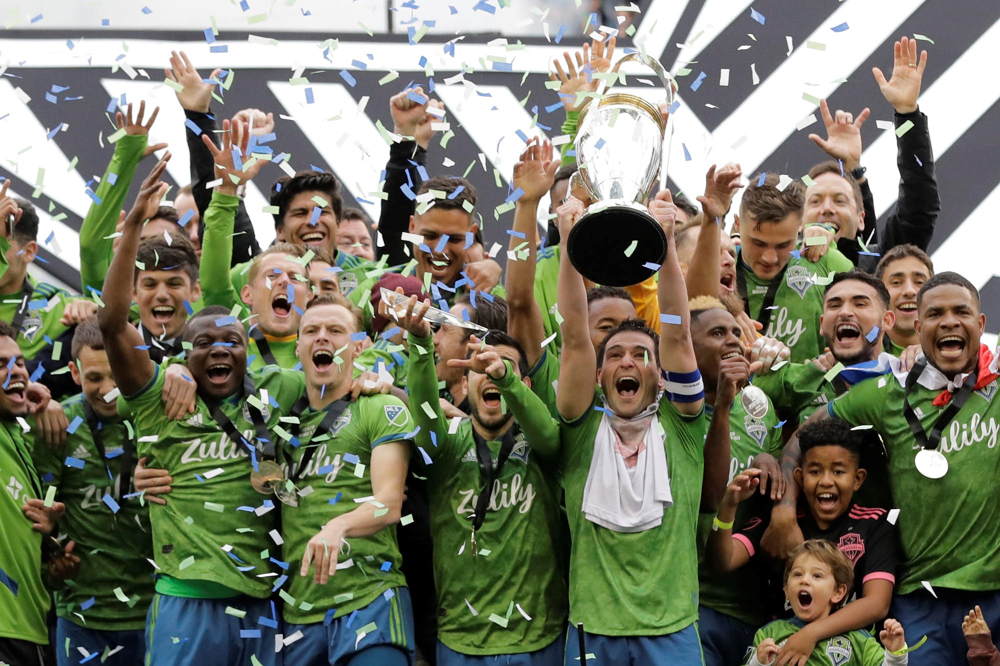
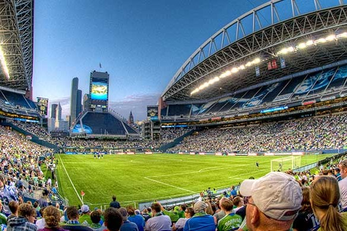
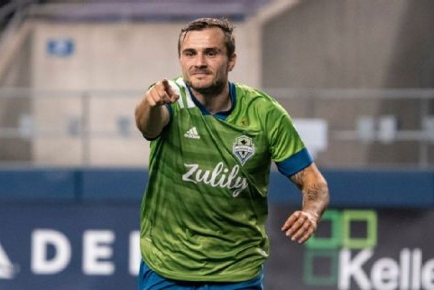

Seattle Sounders FC
Your Champions in the PNW!
Seattle Sounders Football Club are an American professional soccer team based in Seattle, Washington.
Official Page

Champions!
From the depths of the Puget Sound we bring trophies to Seattle.
Schedule

World Class Stadium
There is no better place in all of MLS to watch world class soccer.
Media

Great Fans
The 12th man meets proper hooligans. You bring life to the Sound!
Fan kit
In the playoffs, the Sounders were able to defeat the Supporters' Shield winning-team LAFC in the Conference Finals, leading them to face Toronto FC in the MLS Cup Final for the third time in 4 years
Seattle Sounders FC plays home matches at CenturyLink Field in Seattle, also home to the Seattle Seahawks.
The Sounders FC Alliance was established at the request of minority owner Drew Carey. Based on the fan association at FC Barcelona, members of the Alliance have the ability to vote on the removal of the general manager and on other team decisions.
WTAMU IDT 6380
Fall 2020 · Duane Gregory
{kind=link}